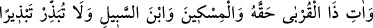
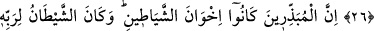
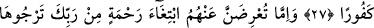
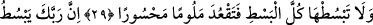
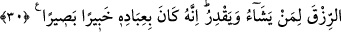

ŞEYTANLARIN DOSTLARI
26. Bir de akrabaya, yoksula, yolcuya hakkını ver. Gereksiz yere de saçıp
savurma.
27. Şüphesiz mallarını saçıp savuranlar şeytanların dostlarıdırlar. Şeytan ise
Rabbine karşı çok nankördür.
28. Eğer Rabbinden umduğun (beklemek durumunda olduğun) bir rahmet için
onların yüzlerine bakamıyorsan, hiç olmazsa kendilerine gönül alıcı bir söz söyle.
29. Eli sıkı olma; büsbütün eli açık da olma. Sonra kınanır, (kaybettiklerinin)
hasretini çeker durursun.
30. Rabbin rızkı dilediğine bol verir, dilediğine daraltır. Şüphesiz ki O, kullarından
haberdardır, (onları) çok iyi görür.
Ey yaratılmışların en fazîletlisi! “Bir de akrabaya, yoksula ve yolcuya hakkını ver.”
Bu âyetin kapsamına Hz. Peygamber (s.a.)’le birlikte onun ümmetinden olan herkes
dâhildir.
Ebû Hanîfe (r.h.)’a göre âyetteki akrabalardan maksad mahrem olanların tamamıdır.
İster yakınlıkları çocuk ve anne-baba gibi doğum sebebiyle olsun, isterse yakınlıkları
erkek ve kız kardeşler gibi doğumdan kaynaklanmayan sebeplerle olsun.
Akrabanın hakkından maksad, fakir iseler onlara nafakalarını vermektir. Bilesin ki
fakir kimseye ancak küçük fakir çocuklarının nafakaları ile zengin olsun fakir olsun,
müslüman olsun kâfir olsun hanımının nafakasını vermek düşer. Zengin bir kimseye ise -
ki zengin temel ihtiyaçlarının dışında nisap miktarı mala sahip olan erkek veya kadındır-
fakir oldukları takdirde anne-babasının nafakası ve anne-baba hükmünde olan dede ve
ninelerin nafakasını vermesi vâcibdir. Anne-babası veya dede ve ninelerinin müslüman
veya kâfir olması durumu değiştirmez. Ancak gayr-i müslim oldukları takdirde bu
hüküm ehl-i zimmet; yâni İslâm ülkesinde müslümanların idâresi altında yaşayan gayr-i
müslim olmaları durumunda geçerlidir. Anne-baba, dede veya nineler harbî; yâni